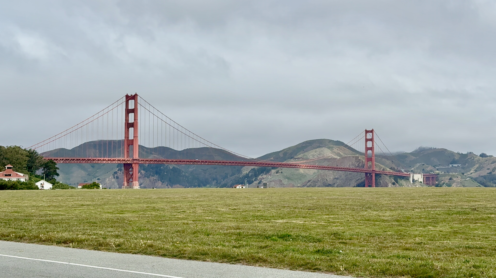
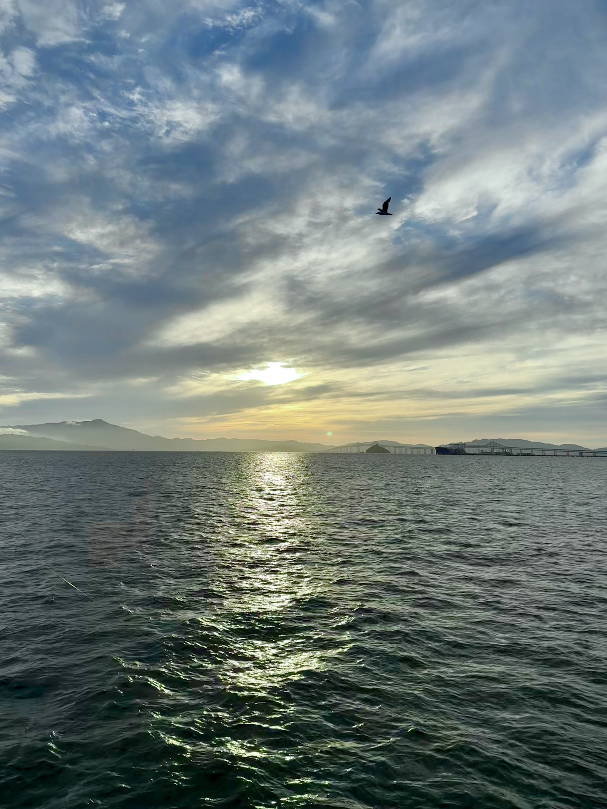

Photo Gallery
Moments From
Moments From
The Road
A running collection of shots from the road — sorted by category, more added as the trip continues.

Golden Gate Bridge

Bixby Bridge

Carmel by the Sea

Garrapata Beach

Garrapata Beach

Granite Canyon Bridge

Hurricane Point

SF Bay from Richmond

Richmond Regional Park

SF Bay view from Richmond
No photos in this category yet — check back soon.